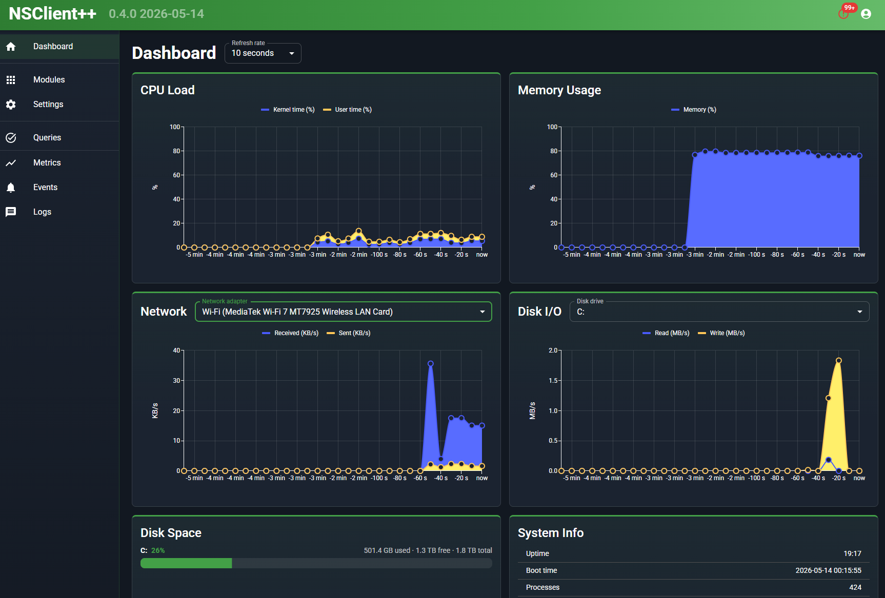

NSClient++
A simple, powerful, and secure monitoring agent for Windows and Linux. Works with Nagios, Icinga, Op5, Prometheus, check_mk — and anything that speaks NRPE, NSCA, NRDP, or REST.
Why NSClient++
- Cross-platform — Windows and major Linux distros (details)
- Many protocols — NRPE, NSCA, NSCA-NG, NRDP, check_mk, Icinga 2, Op5, Graphite, Syslog, SMTP, REST, Prometheus/OpenMetrics
- Web UI with live dashboards and check explorer
- Scriptable in Python, Lua, or any external script
- Secure by default — TLS, client certs, allowed-hosts

Latest releases
Loading latest releases…
All news All releases on GitHub
Get started
- Quick Start — 10-minute walkthrough
- Installation guide — MSI options & silent install
- Securing the agent — TLS & client certs
- Web Interface
Documentation
- Monitoring scenarios — common real-world setups
- Reference — every module & command
- Concepts — how it works under the hood
- FAQ